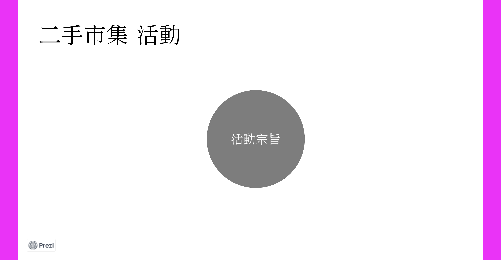

作品集
課程名稱：數位敘事實作與應用
學號：410815493
系級：大傳三A
姓名：紀秉承
指導老師：王錦裕老師
目 錄
個人資訊網
ttps://bill881018.github.io/mainjib/index.html
圖表敘事-SVG實作(使用RawGraph)
https://bill881018.github.io/BIll917/
圖表敘事-LineChart實作(使用HighCharts)
https://xx/
圖表敘事-PieChart實作(使用HighCharts)
https://bill881018.github.io/428spline/
故事地圖實作(使用KnightLab)
https://bill881018.github.io/55homework/
虛擬實境實作(使用Krpano)
http://www1.pu.edu.tw/~s1081549/vtour/tour.html
互動式魚骨圖實作(使用amCharts)
http://www1.pu.edu.tw/~s1081549/abc/index.html
互動簡報製作(使用Prezi)
https://prezi.com/view/9eina3iD0hym1qQre2JZ/
動畫影片製作(使用Powtoon)
https://www.powtoon.com/online-presentation/fX3Eowyifwx/?utm_medium=social-share&utm_campaign=studio+share&utm_source=copy+link&utm_content=fX3Eowyifwx&utm_po=42137248&mode=movie#/
地理資訊系統實作(使用Leaflet)
https://bill881018.github.io/yuyu/
個人資訊網
進入作品
圖表敘事-SVG實作(使用RawGraph)
進入作品
圖表敘事-LineChart實作(使用HighCharts)
進入作品
圖表敘事-PieChart實作(使用HighCharts)
進入作品
故事地圖實作(使用KnightLab)
進入作品
虛擬實境實作(使用Krpano)
進入作品
互動式魚骨圖實作(使用amCharts)
進入作品
互動簡報製作(使用Prezi)
進入作品

動畫影片製作(使用Powtoon)
進入作品
地理資訊系統實作(使用Leaflet)
進入作品